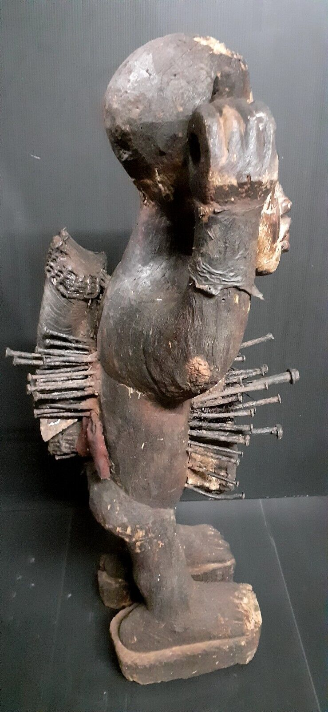
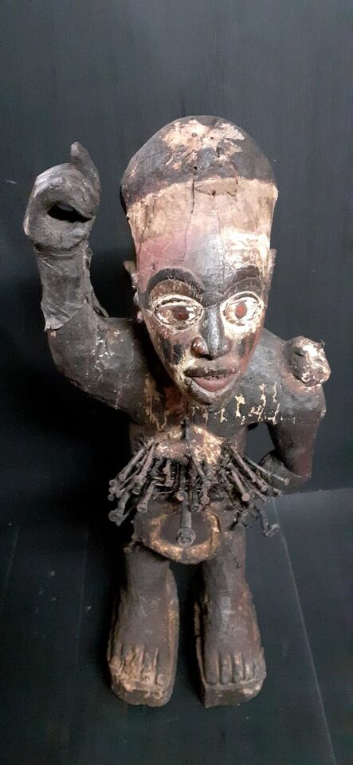
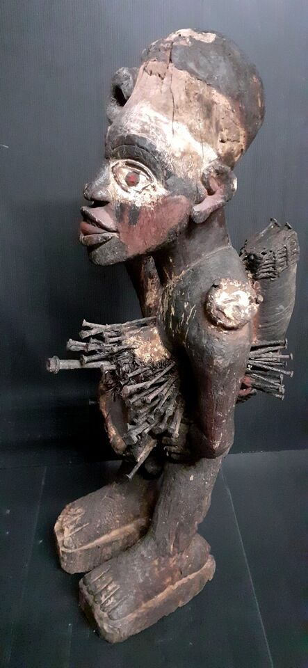
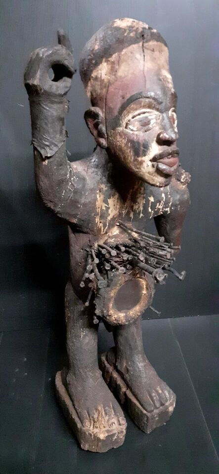
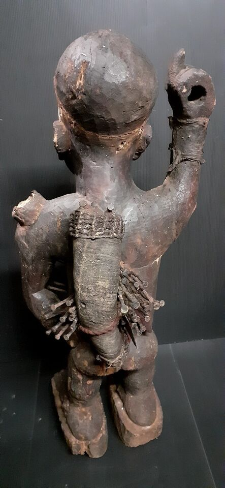

Historique de la statue Nkisi
Prix : 2500 €






Nom: Statue Nkisi
Hauteur: 75 cm
Ethnie: Kongo / Bakongo
Pays d'origine: RDC
Zone de collecte: Kinshasa
Matière: Bois
Prix: 2500 €
Les Minkisi (pluriel de Nkisi) constituent véritablement l'incarnation d'une entité spirituelle qui se soumet à une contrôle humain au travers de rites. Ils sont utilisés pour résoudre toute sorte de problèmes (maladie, stérilité, conflits...) Les Minkisi étaient également les dépositaires de la mémoire collective du clan et pouvaient aussi servir à l'occasion à venger les innocents en infligeant au parjure une maladie subite ou en le tuant. Ce sont généralement des statues anthropomorphes de 15 à 30 cm de haut, possèdant une cavité ventrale dans laquelle est placée la charge magique : le bilongo. Celui-ci est composé de diverses substances végétales et animales placées dans la cavité refermée par un bouchon résineux orné de coquillages ou de miroir. Le miroir permettait au devin de déceler l'approche de sorciers venant de chacune des quatre directions. L'acte de refermer ce réceptacle n'est pas anodin car il indique que les puissances invoquées peuvent être maîtrisées. C'est le devin, le Nganga, qui au cours d'une cérémonie place la charge et de ce fait, active les pouvoirs de la statue à l'aide de multiples attouchements. Par la suite, puisqu'il est l'intercesseur entre la personne qui vient le consulter et le Nkisi, le Nganga lèche un clou ou un élément de métal et l'enfonce dans le corps de la statue. Ce rituel est parfois reproduit en sculpture, certains Nkisi ayant la langue pendante. Selon les sources, on notera que parfois c'était le client lui-même qui léchait le clou avant de l'enfoncer dans la statue (Trésors d'afrique - Tervuren page 288). En léchant le clou, le devin et / ou le client, « réveille » ainsi l'esprit du Nkisi qui peut désormais être sollicité par des invocations. Ensuite tout se jouait dans le regard. Il y avait le regard du Nkisi qui, par ses yeux de métal ou de miroir brillant, semblait fixer celui qui prêtait serment. Et inversement, le regard du client qui ne pouvait se détacher du morceau de miroir présent sur le ventre de la statue où étaient cachées les substances magiques. Le visage était traité avec soin car il devait se montrer agressif. La bouche était toujours ouverte figurant le cri de celui qui prête serment. Selon les régions et les attributions de la statue, les Nkisi (le plus souvent anthropomorphes) avaient des attitudes physiques différentes. Ceux qui serraient une arme de leur bras droit levé étaient les plus dynamiques, les plus efficaces. Ceux qui avaient une bouche ouverte recevaient des offrandes de nourritures en même temps qu'on le priait de "manger" le criminel inconnu contre lequel il était activé. (Trésors d'afrique - Tervuren page 288) D'atres Minkisi, sans clous mais avec une charge ventrale, sont montrés genoux à terre, souvent bichromes, la tête regardant à gauche et les côtes bien marquées (exemple la couverture du livre "Le geste Kongo" Editions Dapper). Il est suggéré que cette mise en avant des côtes fait peut-être référence à la maladie que les Kongo appellent Lubanzi (les côtes) et qui désigne la pneumonie de même que d'autres pathologies respiratoires. La langue saillante indiquant alors qu'il convient de lécher des médicaments au cours du rituel.